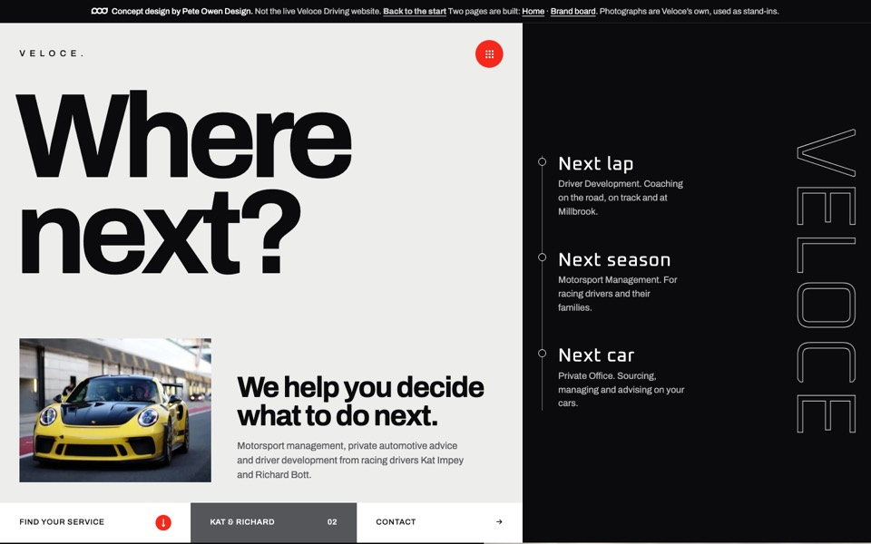

Where next?
A homepage built around one question for every driver and client: where next?
We spent some time with your current website and put together two things for you to look at: a plain-English check of how easily people and AI assistants can find you online, and a design concept for a new website.
Open it to scroll through the whole page. Nothing here is final, and nothing on your current website has been changed.

A homepage built around one question for every driver and client: where next?